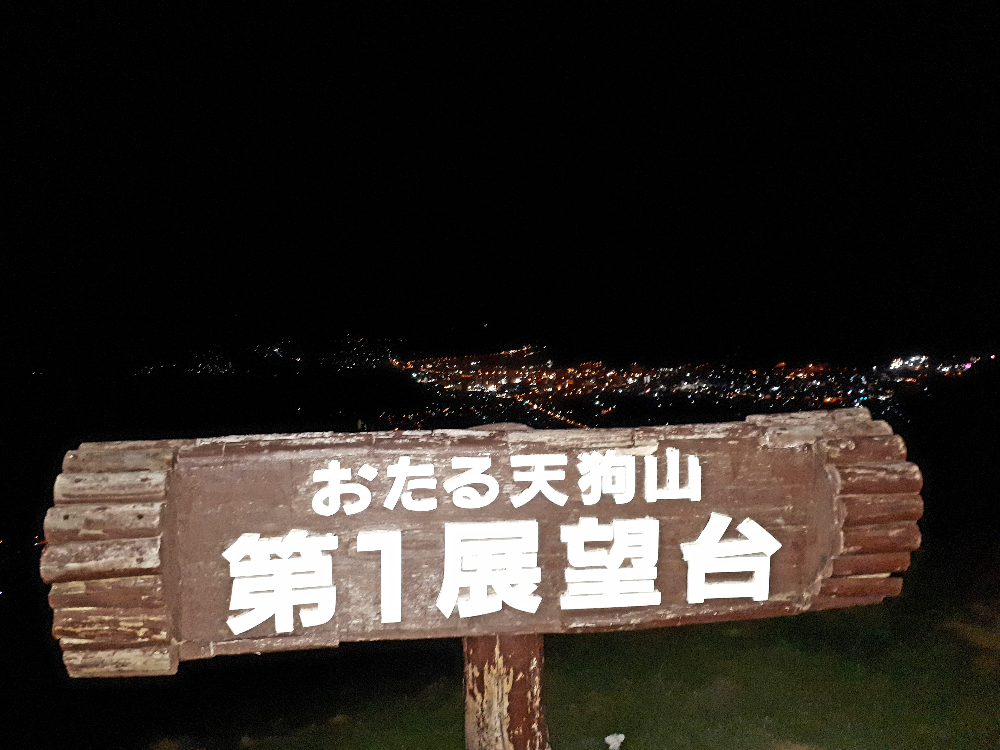

Next stop...Otaru City! Otaru is one of the most romantic places that I have visited in Japan. Why? Let's find out!
First, we need to know how to get there.
Transportation

Otaru City is near New Chitose Airport so it is has the same tranportation approach as Hakodate City. I highly recommend traveling by air from Tokyo if you want to go straight in Otaru City.
In our case, we travel for 4 hours (235 km) by car from Hakodate to Otaru. It is not exhausting though since the late Sakura bloomers were kind of welcoming us.
Let's Checkout..
OTARU CANAL

This is where "Two Less Lonely People" found themselves. Kidding aside, Otaru Canal is really a romantic place to visit. The pavements, the street lights and building designs were Europe inspired. There are so many restaurants near the canal as well as a 40-minute cruise.

A canal adorned with Victorian-style street lamps runs through Otaru. The city attracts a large number of Japanese tourists as well as Russian visitors.
Reference: https://en.wikipedia.org/wiki/Otaru
For day cruise. It will cost you around ¥1500. For night, it is around ¥1800. For private boat rent, the price will depend on the Point or Canal you will choose. The starting price is ¥15,000 (day cruise). They are following a strict timetable so make sure that when you reserved a ride, you are in their docking-area 15 minutes before your scheduled cruise. Do not forget your ticket. Also, the cruise service is operating in all seasons.
MOUNT TENGU

Since it is quite late, we decided to go to Mount Tengu. Mount Tengu has the most popular Ski Resort in Otaru. Since we visited Otaru at the end of Spring, it was closed.
However, you are free to visit (by car) the Mount Tengu's summit and have a breathtaking view of Otaru at night. It has an altitude of 532m that is why it is really cold on top of the mountain even if it is summer. Snowcap might be seen on its summit.
Foodtrip at..

Since we did that last trip for Otaru Canal cruise, we cannot find any open restaurants near the canal. Even "Izakayas". Again, it is not winter so I should have expected that restaurants are also not extending its operating hours. Otaru is popular for winter activities.
Hokkaido is known for its seafood specially crustaceans! I was really looking forward to have one but we ended up eating at KFC. Well, in a brighter side, we ordered for "to-go". We ate on the summit of Mt. Tengu under the starry sky.

KFC meal in Japan is quite expensive than PH. They do not have rice meals nor pasta. Pure chicken, fries and burger entrees. Prepare ¥500-¥1000 for a good meal deal.
So Where to Sleep?
If you want to see the Otaru Canal at night, you can rent hotels near the canal like Hotel Sonia. But if you want to see Otaru City at night, I highly recommend Otaru Villa Moun Teng.
Just a 2-minute walk from the Otaru Tenguyama Ski Resort, Otaru Villa MounTeng provides affordable lodging, Japanese dining and ski storage. It offers laundry facilities and rooms with free Wi-Fi. MounTeng Villa Otaru is a 2-minute stroll from the Tenguyama Ropeway, which offers scenic views of Mount Tengu and Ishikari Bay. Otaru Canal is a 10-minute walk away. The hotel is a 15-minute drive from JR Otaru Station.
A single room might costs around ¥5500 per night.
Reference: https://www.booking.com/hotel/jp/otaru-villa-moun-teng.en-gb.htmlFriendly Reminders!
- Be on time. Otaru Canal Cruise is expecting you to be in their docking station 15 minutes before your cruise schedule.
- Check the restaurants ahead of time. Some restaurants are not open during weekends. Some were closed early.
- If you brought a car, it better to rent a hotel or hostel with free parking.